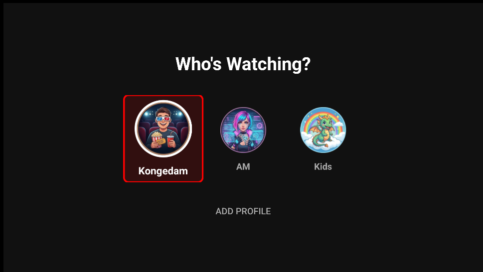
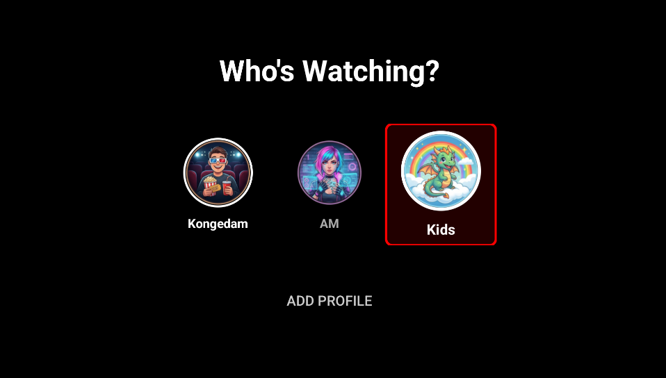

4. Profiles

Screenshot needed: 03-profile-selection.png'">Up to 5 profiles
Each profile has its own:
- Continue Watching and My List
- Ratings (👍/👎)
- Browse filters for Movies and Series
- Movie and series folder selection per IPTV source (if configured)
- Live TV folders, favorites, and guide — or share the primary profile’s TV setup
Kids profile
Enable Kids profile when creating it. Adult content and PIN prompts are hidden.

Screenshot needed: 22-profile-kids.png'">Adult PIN
Settings → Profile & System → Parental Control PIN (adult profiles only). You can also mark Live TV folders as adult content so they require the PIN.
Live TV per profile
On extra profiles you can turn on Primary TV setup. Then that profile uses the same TV folders, favorites, channel order, and guide mappings as the first profile. Turn it off to pick folders independently.
Primary profile
The first profile controls Cloud Sync, Gemini and TMDB settings. It cannot be deleted.